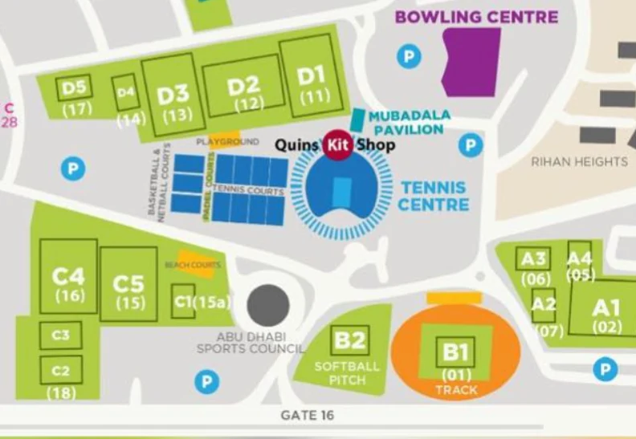

When clubs and parents can use the entry forms on the public site. All times are Abu Dhabi time. Registration opens at the start of the opening day and closes at the end of the closing day. Changing these does not need a deploy — save here and the public page follows. Nothing changes until you press Save.
Leave a date empty to leave it undecided. With no opening date, registration stays closed — which is what you want until the date is agreed. The date under each box is what the public page will print, spelled out, so a mis-typed month is visible straight away.
One switch, not a date and an on/off toggle — two of those end up disagreeing and nobody can tell which one won. Force open is how you test the real forms before the opening date; the public page shows a TEST MODE strip the whole time it is on, so a test can never be mistaken for the real thing.
Right now, on this clock. The public page works this out every second, so it changes over at the moment the date does — nobody has to reload it.
Managers see these on their own dashboard. Choose who each one is for — a manager only sees documents tagged for everyone or for their own age group. PDF, PNG, JPG, XLSX or DOCX, up to 4 MB. Nothing here is ever public.
This removes the file itself. There is no undo — unlike Stop sharing, which only takes it off the managers’ list. Type the document’s title to confirm.
A read-only look at any age group's draw, results and standings — including before it is published. To change a draw or enter a score, use /manager and its age-group switcher.
The pitches running on each day, and which day each age group plays. An age group's day comes from where it has pitches — move it to the other day and it moves on the fixtures, the app and the public site. Nothing here changes until you press Save.
Every pitch as its own cell — the view with room for the names, and the one that reads on a phone. It redraws as you edit below, before you save. A pitch used by two groups is a time-share, not a clash.
The real Zayed Sports City map. Unlock, then drag each block to where it actually is — the starting positions are the code's guess and you know better than it does. Positions are shared across both days, because a block is the same field on Saturday as on Sunday — that is why they still show regardless of which day tab is selected above. Save with the button at the top of the tab.

{{ d.hint }}
Click a group to open it and tick its pitches. Changing a group's day clears its pitches, because the other day has different ones. Two groups can share a pitch — D4 and D5 run U6 in the morning and U7 in the afternoon, which is a time-share, not a clash.
Makes an account that can sign in straight away — no invite code, no approval step. You type the password and tell them yourself; nothing is emailed.
{{ cmRoleNote }}
| Name | Username | Role | Status | |
|---|---|---|---|---|
| {{ a.name }} | {{ a.username }} | {{ a.roleLabel }} | Active |
The link you email to club contacts. It is deliberately not published anywhere on the site, and the key on the end of it is the only thing keeping the form private — send it to clubs directly, never post it publicly.
Clubs declare how many teams they expect to bring, months before teams register one by one. This compares the two. Anything marked Short or Over is a club worth a phone call — a plan that has changed still changes pools, pitches and the draw. Declarations are estimates, not commitments.
| Club | Declared | Registered | Status | Contact | |||||||
|---|---|---|---|---|---|---|---|---|---|---|---|
| {{ c.club }} | {{ c.declaredTotal }} | {{ c.registeredTotal }} | {{ c.statusLabel }} | {{ c.contactName }} {{ c.contactEmail }} {{ c.contactPhone }} |
|||||||
|
They said: {{ c.notes }}
|
|||||||||||
These clubs have teams in the tournament and no declaration on file. Either they skipped the declaration, or they typed their club name differently on the two forms — worth a look before you chase them.
| {{ h }} | |||||||||||
|---|---|---|---|---|---|---|---|---|---|---|---|
| {{ g.club }} ({{ g.count }}) | |||||||||||
| {{ r.submittedAtDisplay }} | {{ r.club }} | {{ r.teamName }} | {{ r.ageGroup }} | {{ r.preferredPool }} | {{ r.headCoachName }} | {{ r.headCoachEmail }} | {{ r.headCoachMobile }} | {{ r.managerName }} | {{ r.managerMobile }} |
|
{{ r.notes }} |
|
Squad ({{ r.rosterCount }})
{{ p.name }} ({{ p.dob }})
|
|||||||||||
| {{ h }} | |||||||||||
|---|---|---|---|---|---|---|---|---|---|---|---|
| {{ g.club }} ({{ g.count }}) | |||||||||||
| {{ r.submittedAtDisplay }} | {{ r.playerName }} | {{ r.dob }} | {{ r.club }} | {{ r.ageGroup }} | {{ r.parentName }} | {{ r.parentEmail }} | {{ r.parentMobile }} | {{ r.emergencyContact }} | {{ r.emergencyMobile }} | {{ r.medicalDisplay }} | {{ r.consent }} |
Adds the Google button as a second way into this same login. Your username and password keep working exactly as they do now.
Resetting a password does not ask for their old one - the point is that it is lost. Tell them the new one yourself; nothing is emailed.